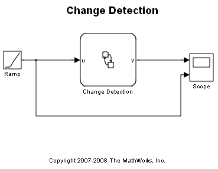
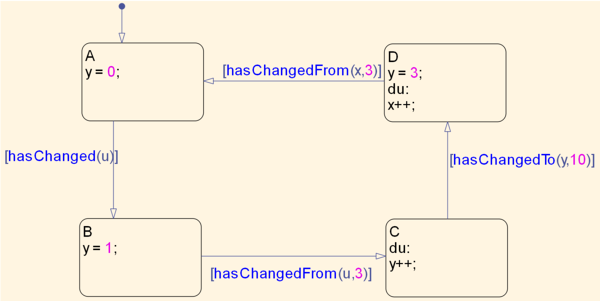
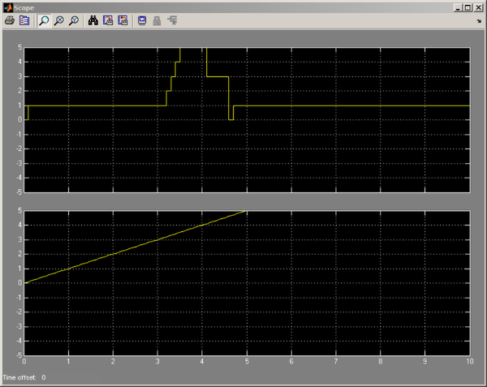

Change Detection
Change detection allows a condition in a Stateflow® chart to query whether a chart input, output or local variable has changed value since the last time step. This demonstration gives a basic overview of this feature. Three new functions are provided for querying the change: hasChanged, hasChangedFrom and hasChangedTo which return 1 or 0 based on whether there was a change. Note that these are functional form keywords and can be used wherever normal function call is made. The chart named 'Change Detection' shows an example use of all these functions.
Run the simulation and observe how the value of y changes. If you double click and open the 'Change Detection' chart you will notice that the value of y is being set in four states which are connected by transition action with hasChanged* condition actions. Try to follow the transition path by comparing to scope output.
  